All RailCOMPLETE items in the drawing are shown in the Object Manager. This includes all railway objects as well as tables, labels and areas.
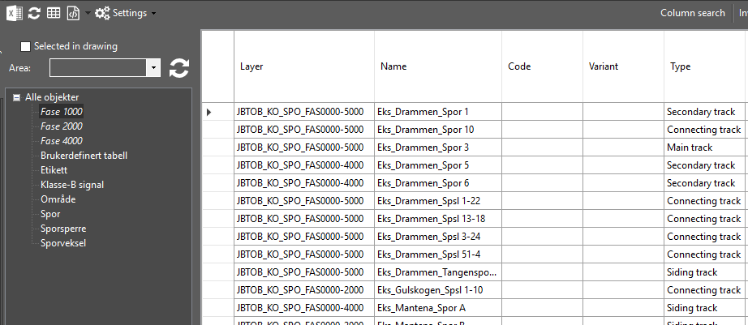
A RailCOMPLETE item can be located in the Object Manager by right-clicking on the item in the drawing, and selecting "RailCOMPLETE Manage > Objects..." as shown below.
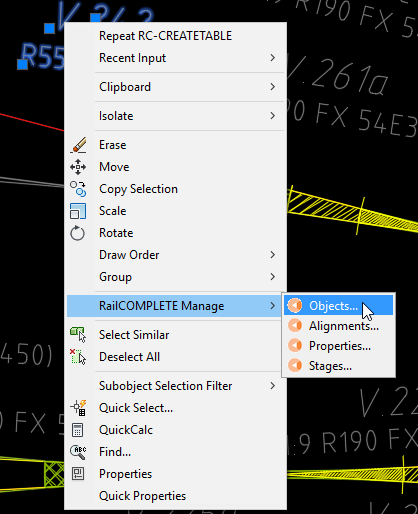
When one or more objects are present in the Object Manager, right-clicking brings up a menu of mark, select and focus commands.
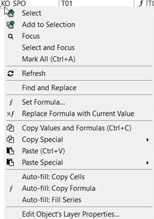
To see more columns, right-click on any column header and select Add.
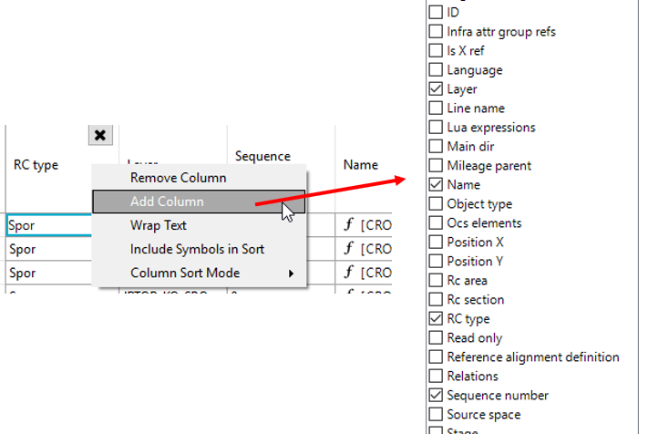
It also is possible to rearrange columns by simply dragging them sideways.
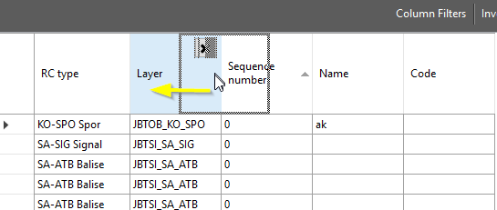
Click the X on the column header to remove the column.
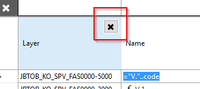
The Object Manager has powerful search and filter mechanisms. Filtering can be done by selecting the desired object type or types in the left side browser (1) or by entering a search pattern in the search field (2). Only filtered rows and unhidden columns are searched. The categories shown in the object type browser may also be custom object type filters – right-click an existing item to add, edit or delete an object type filter.
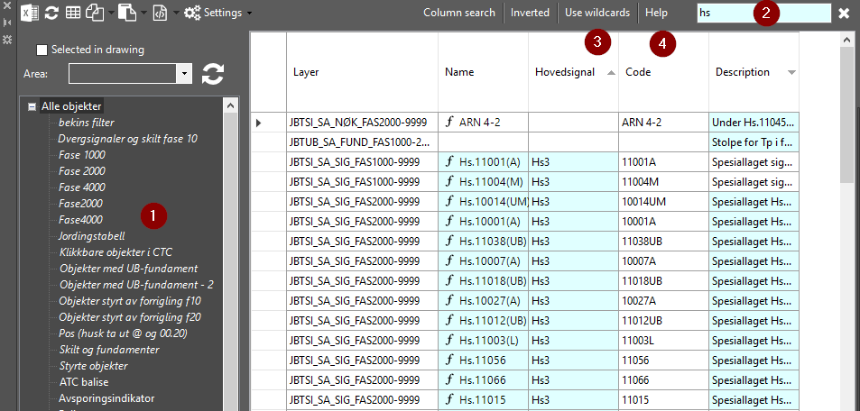
Select between searching using wildcards or just regular text (3). The AutoCAD wildcard syntax applies, press Help (4) to see details.
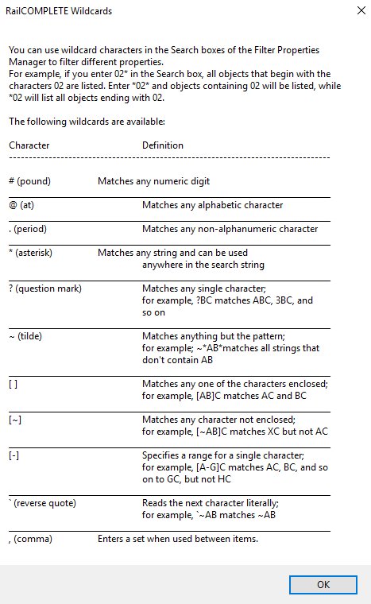
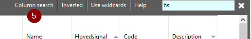
Yet another search method is to use Column search (5), where each column gets its own private search pattern to be used in that column only. Under Object Manager Settings (6) you can select between Union or Intersection search modes, i.e. picking Object Manager rows that match at least one column search pattern, or only those that match all the column search patterns.
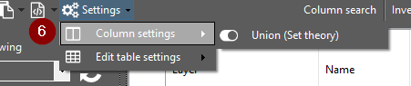
All of the search methods mentioned above may be combined in order to narrow down your row selection (objects).
To further narrowing down your search, you may select a named area in the drawing (7), i.e. considering only objects found inside that area.
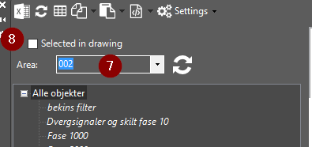
Another type of search mechanism is to select objects in the CAD system modelspace using the CAD system’s Quick Select or pick-them-yourself methods, and checking the “Selected in drawing” box (8) in the Object Manager.
Most fields can have a derived value. E.g., Name can be derived from a quoted text concatenated with the contents of the Code property. This is done by writing the formula '="V"..code' directly into the Name cell in the object manager or by clicking on the 'f' icon (formula) that appears in the cell, to bring up the formula editor where your can enter '"V."..code' (without the equality sign) and test your formula.
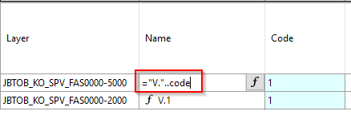
The fields (the cells) in the Object Manager display the current values of their object’s properties. Such properties may either hold a direct value, or a formula which evaluates to a derived value. E.g., a ‘name’ property can be derived from a static text “V.” concatenated with the ‘code’ value from that same object, giving the formula ‘”V.”..code’. The ‘=’ equality sign is a convenient way to tell the Object Manger that you are now entering a formula and not a direct value.
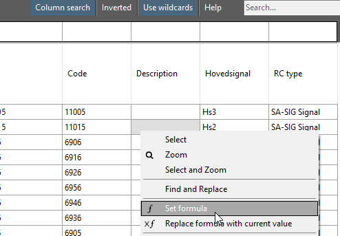
We tend to use the ‘name’ property for object names to be shown in drawings and tables, and the ‘code’ property for a more terse version. You will also often see that the ‘code’ property is formulated by involving related object’s codes, or formulated using the object’s own ‘sequence number’ property, e.g. numbering outgoing turnouts’ ‘code’ property as ‘(seq*2)+1’.
To remove a formula and replace it with its current value, just erase the formula, or right-click and select “Replace formula with current value”. To empty the cell completely, just mark it and press DELETE.
To start the formula editor, click the ‘f’ icon in the cell, or right-click and select “Set formula”.
Use the text editor (1) to get the desired output (2). The output field will show "Null or syntax error" if the formula contains errors.
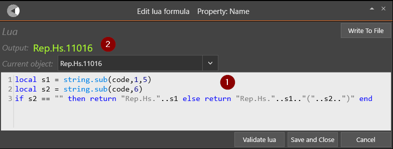
Press CTRL+ENTER to validate your formula’s syntax.
Read more about programming in RailCOMPLETE in the Lua section.
To copy formula, use the Auto-fill: Copy formula. Be sure to have one cell with formula within the selection.
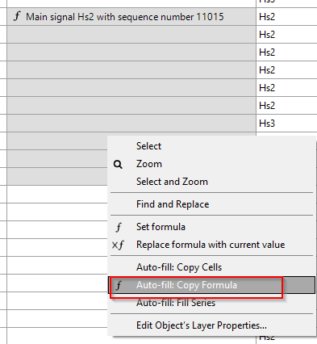
The Object Manager offers a smart way to fill series. By selecting a set of fields and select the Auto-fill: Fill Series, the empty fields will be filled with a sequence number, as shown below.
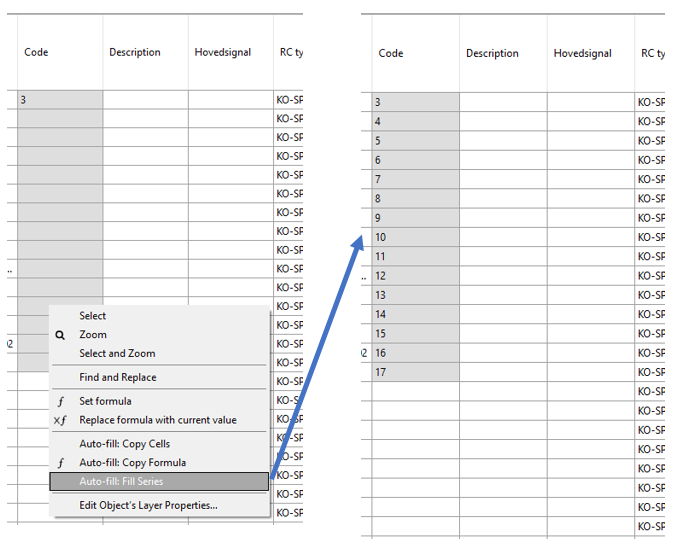
This example shows a quick way to assign Sequence number, Code and Name to a selection of signals. We want names to start with “Hs.” and then cite the signal’s number, even numbers for signals on the right side and odd numbers for signals on the left side of the alignment.
First step is to assign a Sequence number for the left and right signals separately. The Column Filter can be used to remove the signals on the left side.
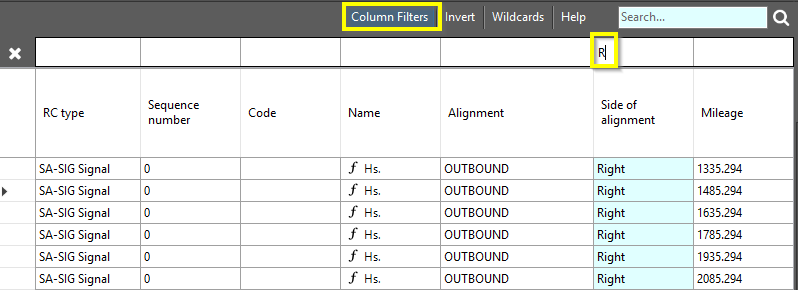
Select the Sequence number cells, right click and select Fill series.
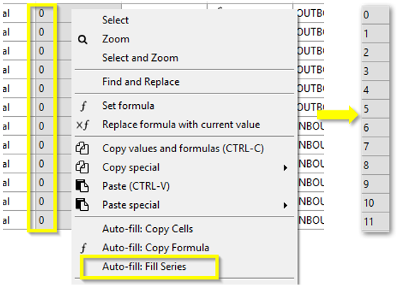
Select the first Code cell and insert the formula =seq*2+2 and press enter.
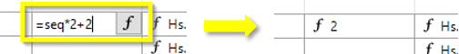
The cell value is now 2, with an f, indicating that the value is calculated from a formula.
Mark the rest of the cells in the Code column and select Auto-fill: Copy Formula.
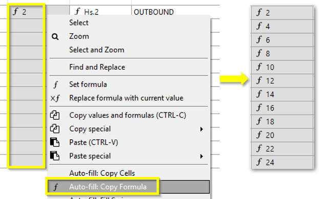
The cells are now given even numbers.
Do the same for the signals on the left side of the alignment and use the formula =seq*2+1.
The result should be something like this:
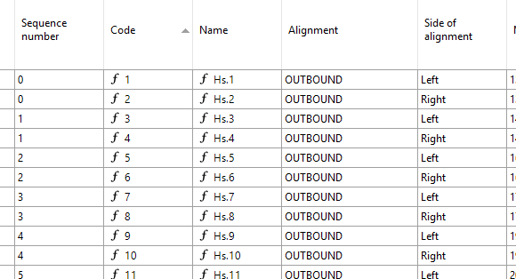
In this example the name was completed as well, since the name was dependent on the Code value through the formula =”Hs.”..Code
Use the Find and replace (right-click inside the Object Manager) to do mass update of values.
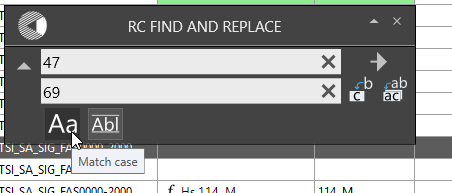
A quick way to create a table inside the drawing is to click the "Create Table" button at the top right corner in the Object Manager window.
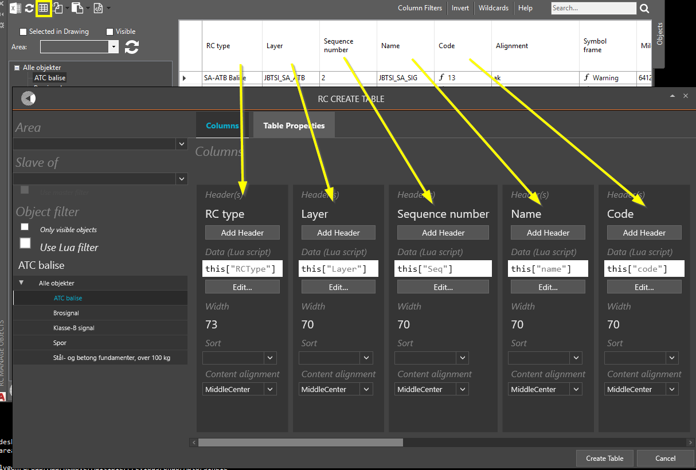
Clicking the Export to Excel button at the top left will open an Excel spreadsheet with the same content.
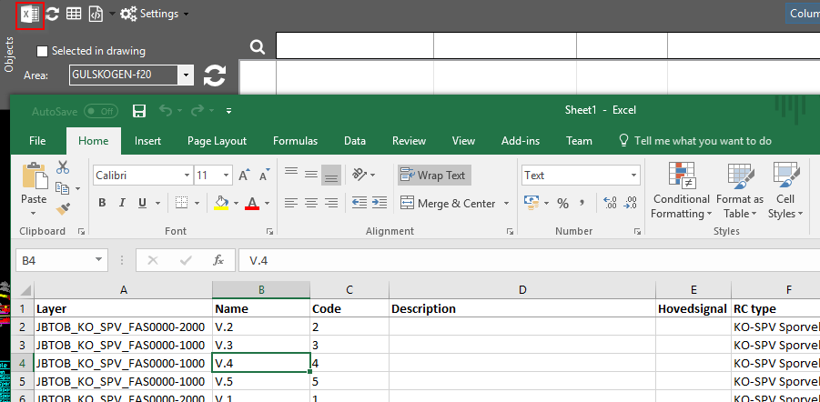
Note that any filters defined in the Object Manager will be applied during the export.
All RailCOMPLETE alignment items are shown in the Manage Alignments window.
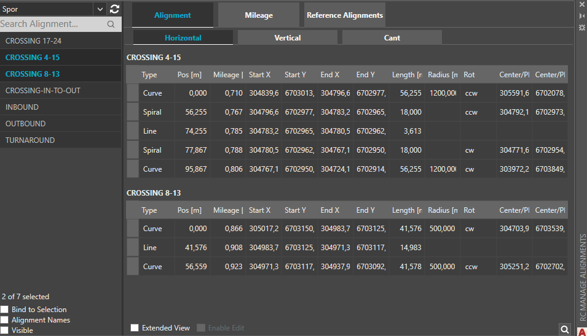
The Alignment Manager offers the possibility to...
The Stage Manager scans the CAD system layers for information about the railway model’s construction stages. The scanning is guided by a user defined Stage Pattern. By selecting one or more items from the Entering, Current and / or Leaving stage columns, you can see what is entering at the beginning of a phase, what is present during that phase’s duration, and what is leaving towards a phase. E.g., if stage info such as “_Phase 20.00 – 40.00” is found inside a CAD layer name, then for instance selecting “Entering 20.00”, or “Current 30.00” or “Leaving 40.00” will turn that layer on and make its CAD objects visible. In order to see time-critical construction conflicts, simply select Entering xx.yy and the Leaving xx.yy, where xx.yy denotes the start of a particular operational stage.
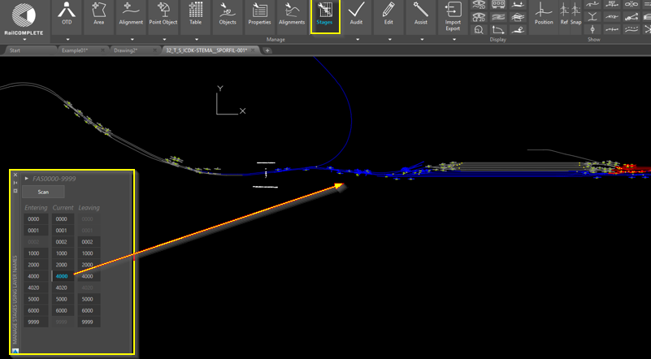
The layer name stage information is conveniently entered using the CAD system’s own layer manager:
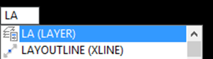
Split your object layers (such as the layer ‘JBTSI_SA_SIG’) into multiple copies and add your preferred stage name to each such layer copy. In the example below, there are a total of six stages named 00.00, 10.00, 20.00, 40.00, 50.00 and 60.00, with ’99.99’ symbolizing ‘indefinitely’.
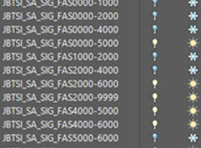
Then enter the corresponding stage information search pattern into the Stage Manager…
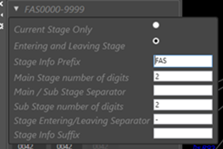
…and apply the Scan button to find layers which will respond when you activate the stage buttons that appear in the stage window:
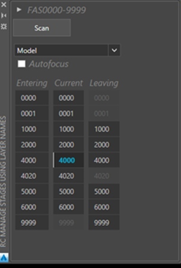
Stage 0 (00.00 etc) usually denotes the starting configuration for your project. Layers with substage number 0 (00 etc) usually denote the start of operations for a new track layout (a main stage). In the example above there are substages 00.01 and 40.20 in addition to the main stages.
An object’s main properties are displayed in the Manage Properties window. You may select multiple objects simultaneously, including objects of different types. If they have a property in common, e.g. Name or Code, then this property will be visible. If the selected objects’ values differ, then the text ‘VARIES’ will be shown. Most numerical properties can be added to or subtracted from directly in the property manager. Some properties are built into the basic object types, whereas others are custom defined for your railway administration. Custom properties and their possible values are usually shown in the administration’s own language, whereas basic properties and values are presented in English. Some objects will display their Model Check results in the Manage Properties window, based on the object’s own calculations and its custom model checking formulas. 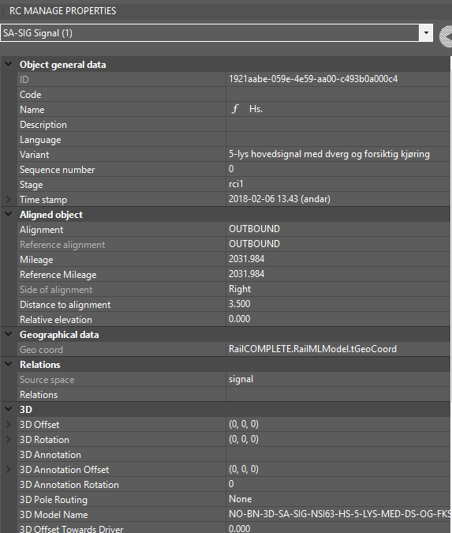
Customized and predefined tables can be created from the Table button in the ribbon, or from “Create Table” in the Object Manager.
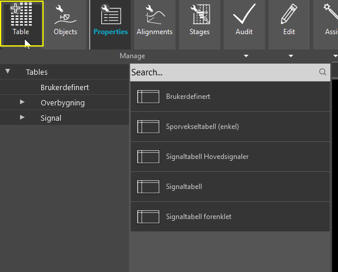
A column’s content is defined by a formula. A formula may actually be a complex and large program which returns exactly one value. The language used for such formulas / programs is Lua. Please refer to the open literature for details on Lua.
Formatting and sorting may be specified for each table column.
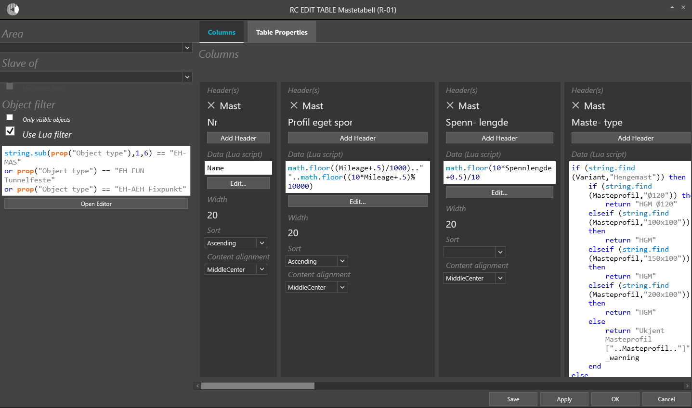